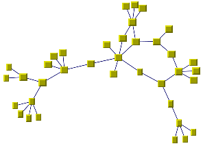
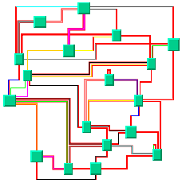
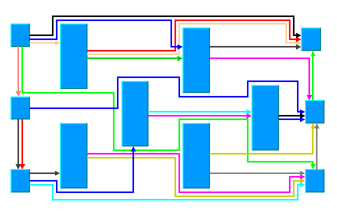
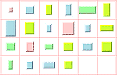

IBM
ILOG Elixir Enterprise
V3.0 3.0
>
Using graph layout algorithms
>
Introducing graph layout
>
The graph layout algorithms
INDEX
|
PREVIOUS
NEXT
The graph layout algorithms
The graph layout package provides numerous ready-to-use layout algorithms. They are shown below with sample illustrations. In addition, you can develop new layout algorithms using the generic layout framework.
Force-directed (FL)

Link layout (LL)

Link layout (LL)

Grid layout (GL)

Current section
Introducing graph layout